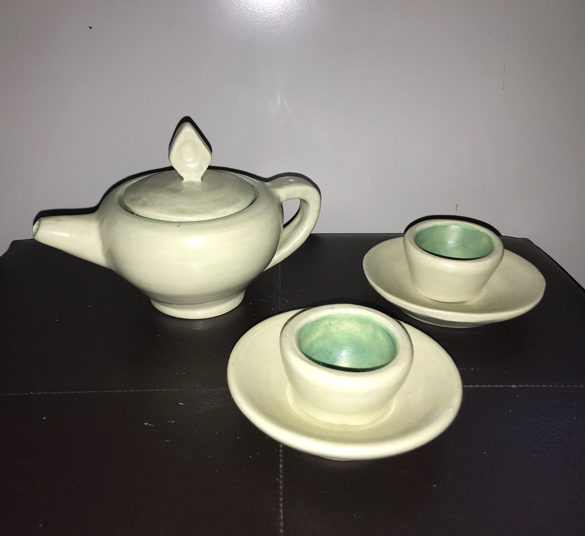

Teapot Set

This was a teapot set I made when I was a sophomore (2017) at the National Cathedral School for Girls. I was in an intermediate/advanced ceramics class, and the assignment was to create a teapot of any style and color. This particular pot was thrown on the wheel, and the spout and handle were attached afterward. The cups and saucers were not part of the original project, but I made the quick addition after being left with some extra time. The outside is painted with a light mint color, while the inside is painted with a spotted teal and light green glaze.